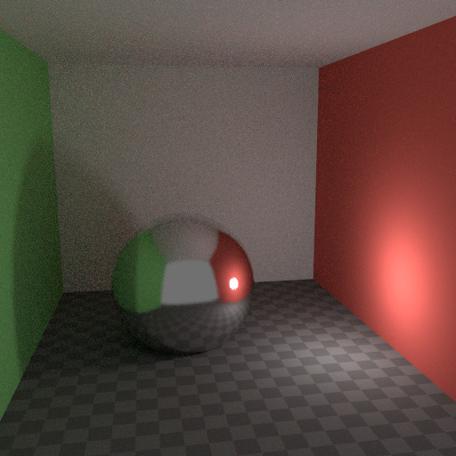
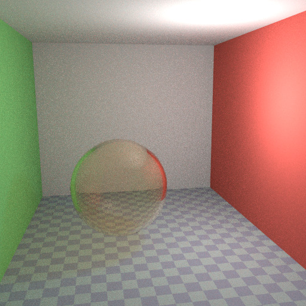
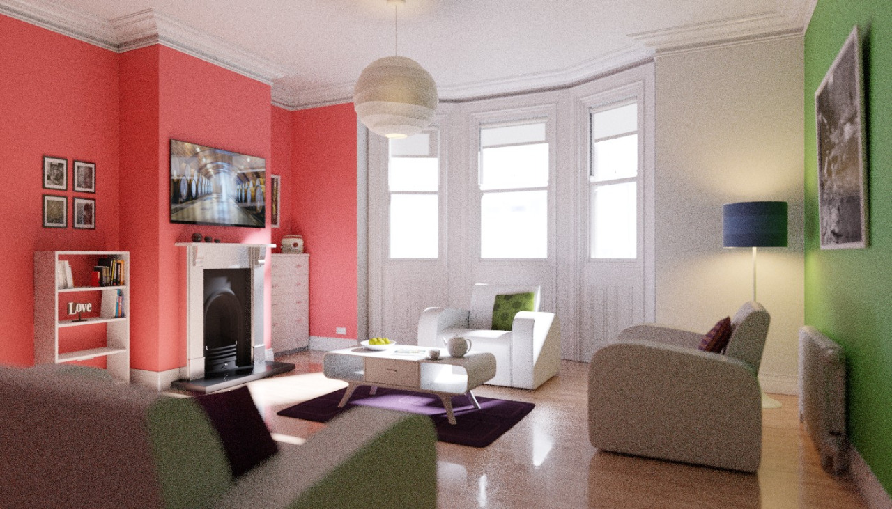
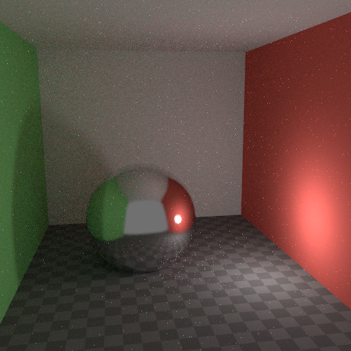

Thuyên Giảm Nhiễu -- Reducing Noise¶
При здійсненні фінального рендера важливо, наскільки це можливо, скоротити шум. Тут ми обговоримо ряд хитрощів, які, порушуючи закони фізики, особливо важливі при рендерингу, зображуванні анімацій у межах розумного часу. Клацайте для розгортання зображень прикладів, щоб бачити різницю у шумі.
Dò Đường Đi -- Path Tracing¶
Cycles використовує простеження шляху з наступною оцінкою подій, яка не є доцільною при рендерингу усіх типів ефектів освітлення, таких як каустика, але має перевагу у тому, що здатна рендерити більш деталізовані та великі сцени, порівняно з іншими алгоритмами рендерингу. Це тому, що нам не потрібно зберігати, наприклад, карту фотонів у пам'яті, і тому, що ми можемо тримати промені відносно послідовними, щоб використовувати кеш зображення на вимогу, у порівняні з, наприклад, двонапрямним простеженням шляху.
Ми робимо зворотне до того, що відбувається у реальності, простежуючи світлові промені від камери у сцену та на освітлювачі, а не з джерел світла у сцену, а потім у камеру. Це має перевагу у тому, що ми не витрачаємо світлові промені, які не доходять до камери, однак, це також означає, що важко знайти кілька шляхів світла, що зможуть все зробити. Промені світла будуть надіслані відповідно до поверхні BRDF або у напрямку відомих джерел освітлення (ламп, емітувальних сітей з Sample як Lamp).
Xem thêm
Детальніше дивіться тут -- Light Paths та тут -- Integrator.
Nhiễu Từ Đâu Đến -- Where Noise Comes From¶
Для розуміння, звідки береться шум, візьмемо, наприклад, сцену нижче. Коли ми простежуємо промінь світла у локації, позначеній білим кругом на червоній точці, то друге зображення дає бачення того, що «бачить» відтінювач дифузії, розсіяння.
Для знаходження світла, що відбивається від цієї поверхні, нам необхідно знайти усереднений колір з усіх цих пікселів. Зверніть увагу на глянцеву підсвітку на сфері та на яскраву пляму, яку відкидає лампа поблизу на стіну. Ці гарячі плями є у 100 разів яскравішими, ніж інші частини зображення, та значно впливатимуть на освітлення цього пікселя.

The scene. |

Irradiance at the shading point. |

The detected highlights. |
Ця лампа є відомим джерелом світла, а тому її локації вже відома, але глянцеві підсвітка(и), які вона спричиняє -- це інше питання. Найкраще, що ми можемо зробити за допомогою простеження шляху, -- це розподілити промені світла випадково по півсфері, сподіваючись виявити усі важливі яскраві плями. Якщо для деяких пікселів ми пропустимо якусь яскраву пляму, але ми знаходимо її для інших пікселів, що це спричинить шум. Чим більше вибірок ми візьмемо, тим вища ймовірність того, що ми охопимо усі важливі джерела освітлення.
За допомогою деяких хитрощів ми можемо скоротити цей шум. Якщо ми розмиємо ці яскраві плями, то вони стануть більшими та менш інтенсивними, що полегшить їх знаходження та дасть менше шуму. Це не дасть точно такого ж результату, але часто він буде достатньо близьким при огляді його через розсіяння, дифузію або м'яке глянцеве відбиття. Нижче наведено приклад використання Фільтра Глянцю -- Filter Glossy та Спаду Світла -- Light Falloff.

Використання Glossy Filter та Light Falloff. |

Irradiance at the shading point. |

The detected highlights. |
Відскоки -- Bounces¶
У реальності світло відскакує величезну кількість разів у зв'язку з тим, що швидкість світла є дуже високою. На практиці більше відскоків привнесе більше шуму і може бути доцільно вжити щось на кшталт передустави Limited Global Illumination на панелі Light Paths, яка використовує лише по кілька відскоків для різних типів відтінювачів. Розсіяні, дифузні поверхні типово можуть потребувати меншої кількості відскоків, тоді як глянцеві поверхні потребують їх дещо більше, а відтінювачі пропускання, такі як скло, зазвичай, вимагають найбільше відскоків.

Không Bật Nẩy. |

Максимум два відскоки. |

Максимум чотири відскоки. |
Також важливим є використання кольорів для відтінювача, що не мають значень 1.0 або близько цього для компонент; намагайтеся зберігати максимальне значення 0.8 або менше для колірних компонент та робіть ваші освітлювачі яскравішими. У реальності, поверхні рідко ідеально відбивають усе світло, але, звичайно, є винятки; зазвичай, скло буде пропускати більше світла крізь себе, тому нам потрібно для нього більше відскоків. Вищі значення для колірних компонент тяжіють уводити шум, оскільки інтенсивність світла далі значно не зменшується при відскакуванні його від кожної поверхні.
Каустика та Фільтр Глянцю -- Caustics and Filter Glossy¶
Caustics are a well-known source of noise, causing fireflies. They happen because the renderer has difficulty finding specular highlights viewed through a soft glossy or diffuse reflection. There is a No Caustics option to disable glossy behind a diffuse reflection entirely. Many renderers will typically disable caustics by default.

Default settings. |

Caustics disabled. |

Значення Filter Glossy більше за нуль. |
{kind=link}
Однак, використання варіанту без каустик буде призводити до пропущення освітлення і він всеще не охоплює випадок, коли різке глянцеве відбиття переглядається через м'яке глянцеве відбиття. Існує опція Filter Glossy для скорочення шуму у таких випадках, але ціною точності. Це буде розмивати різке глянцеве відбиття для полегшення його знаходження, збільшуючи шорсткість -- Roughness для відтінювача.
Вище наведені зображення показують випадки зі стандартними уставами, без каустик та фільтром глянцю, заданим у значення 1.0.
Спад Світла -- Light Falloff¶
У реальності світло у вакуумі завжди спадає зі швидкістю -- 1/(distance^2). Однак, при зменшенні відстані до нуля це значення зростає до безкінечності й ми можемо отримати дуже яскраві плями на зображенні. Це, здебільшого, проблема для побічного, непрямого освітлення, де ймовірність потрапляння на таку малу, але надзвичайно яскраву пляму, є низькою, і це трапляється дуже рідко. Це типовий рецепт для світлячків.

Жорсткий спад. |

М'який спад. |
Для зменшення цієї проблеми вузол «Спад Світла» -- Light Falloff має фактор Smooth, що може використовуватися для скорочення максимальної інтенсивності світла, що може бути привнесене для поверхонь поблизу. Зображення вище показують приклади стандартного спаду та спаду зі значенням Smooth як 1.0.
Lấy Mẫu Vật Đa Trọng -- Multiple Importance Sampling¶
Матеріали з відтінювачем Emission можуть бути налаштовані, щоб використовувати Багатовибірку за Значністю -- Multiple Importance Sampling (Устави Матеріалу -- Material Settings). Це означає, що вони будуть отримувати промені, послані у напрямку прямо на них, а не вибиратися по залишковому принципу на основі випадкових відскоків навколо. Для дуже яскравих сітьових джерел світла (mesh light) це може суттєво скоротити шум. Однак, коли емісія не є особливо яскравою, то це буде відбирати вибірки з інших яскравих джерел світла, для яких важливо виявити їх таким способом.
Оптимальну уставу тут важко вгадати; це може бути справою проб і помилок, але часто ясно, що якийсь яскравий об'єкт може привносити світло тільки локально, тоді як світна сіть (mesh light) як лампа, потребує увімкнення цієї опції. Ось приклад, де емітувальні сфери привносять мало в освітлення, і рендери зображень з дещо менши шумом при вимкненій опції Multiple Importance.

Multiple Importance вимкнуто. |
{kind=link}
Фон світу також має опцію Multiple Importance (Устави -- Settings). Це здебільшого корисно для карт середовища, що мають малі яскраві плями в них, а не є плавними. Ця опція потім буде, при попередній обробці, визначати ці яскраві плями та посилати промені світла прямо на них. Знову ж, вмикання цієї опції може відбирати вибірки з більш важливих джерел світла, з яких не потрібно брати.
Скло і Прозорі Тіні -- Glass and Transparent Shadows¶
При вимкненні каустик скло буде пропускати тіні й з фільтром глянцю вони можуть бути надто м'якими. Ми можемо зробити скляний відтінювач, що буде використовувати Glass BSDF при перегляді прямо та Transparent BSDF при перегляді непрямо. Transparent BSDF може використовуватися для прозорих тіней для знаходження джерел світла прямо крізь поверхні та буде давати належно забарвлені тіні, але без каустик. Вузол Light Path використовується для визначення того, коли використовувати який з цих двох відтінювачів.

Оптимізований відтінювач скла.
Above we can see the node setup used for the glass transparency trick; on the left the render has too much shadow due to missing caustics, and on the right the render with the trick.

Оптимізований відтінювач скла. |
{kind=link}
{kind=link}
Портали Світла -- Light Portals¶
When rendering a daylight indoor scene where most of the light is coming in through a window or door opening, it is difficult for the integrator to find its way to them. To fix this, use Light Portals, these work by adding an Area Lamp. You then will need to modify its shape to match that of the opening that you are trying to fill.

Знешумлення -- Denoising¶
Even with all the settings described above there will always end up being some render noise no matter how many samples you use. To fix this there is a post-processing technique to cleanup the final bit of noise. To use this enable Denoising in the Render Layers tab of the Properties editor.
Нижче наведено приклад рендера від The Pixelary.

Приклад рендера перед знешумленням. |

Приклад рендера після знешумлення. |
Затиск Світлячків -- Clamp Fireflies¶
Ідеально за допомогою усіх наведених вище хитрощів світлячки можуть бути усунені, але вони все ще можуть траплятися. Для цього, інтенсивність, яку будь-яка вибірка індивідуального променя світла буде привносити у піксель, може бути затиснута максимальним значенням за допомогою устави «Затиск» -- Clamp setting для інтегратора.
Якщо ця устава буде задана надто низькою, це може спричинити пропуск підсвіток на зображенні, що може бути корисно для збереження ефектів камери, таких як свічення та відблиск. Для послаблення цієї загадки часто корисно затискати тільки побічні -- indirect відскоки, залишаючи підсвітки, що прямо (directly) видимі для камери, неторканими.

Без затиску -- Clamp на 0. |

Із затиском -- Clamp на 4. |
{kind=link}